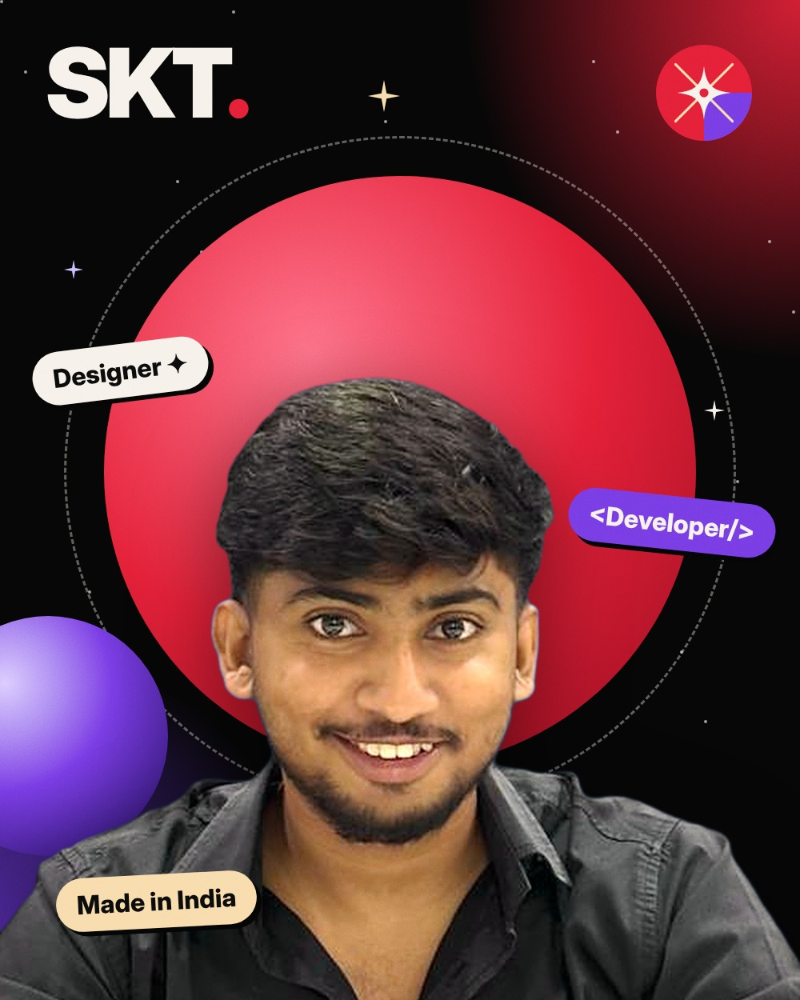
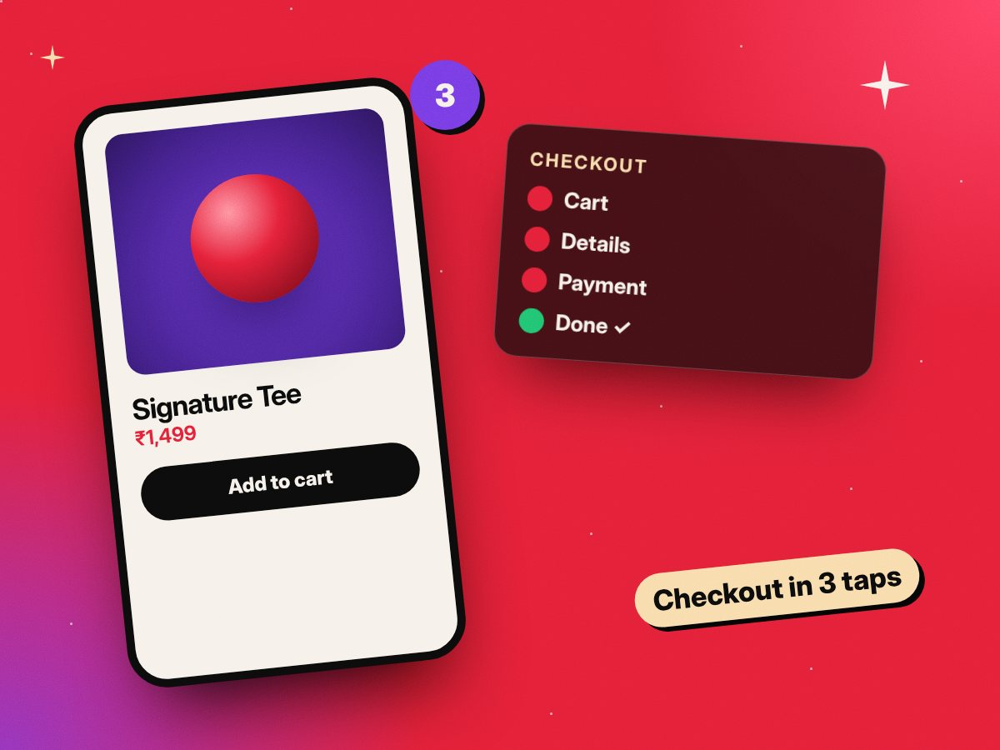
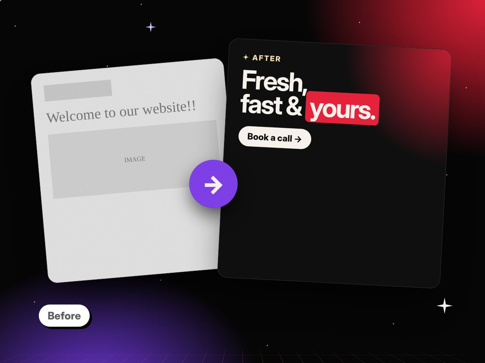

It started with a question.
Every website that felt good to use made me ask: why does this feel so right? I couldn't stop pulling pages apart to find out.
For you → I look at your site the way your customers do.
Hi, I'm Sandeep Kumar Thakur — a web developer and UI/UX designer helping brands launch modern, responsive websites that turn visitors into clients.
IST · working with clients worldwide

I'm Sandeep — a web developer and UI/UX designer from India. I turn ideas into beautiful, fast websites and digital products that help businesses grow online.
An approach that brings difference.
No templates and no copy-paste layouts. Every website starts from your audience, your goals and your story, then gets a look nobody else has.
How a curious question turned into a career, plus what each chapter means for you as a client.
Every website that felt good to use made me ask: why does this feel so right? I couldn't stop pulling pages apart to find out.
For you → I look at your site the way your customers do.
Spacing, type, colour, motion. Good design isn't decoration. It's how people understand what to do next. Figma became my sketchbook.
For you → Layouts that guide visitors to act.
Beautiful screens weren't enough. I wanted them alive in the browser, so I learned HTML, CSS, JavaScript and React and built fast, responsive sites.
For you → Designs that actually work on every device.
I design and develop, so nothing gets lost in translation. The design you approve is what goes live, down to the last pixel.
For you → One contact, no hand-off surprises.
From India, working with clients worldwide, I build websites that turn visitors into clients. The next chapter could be yours.

Interfaces that feel effortless. I start with your users, map clear journeys, then polish every screen until it looks and feels premium.
Ideal for: Startups shaping a product, brands planning a new website, apps that confuse users.
Explore UI/UX Design
Fast, responsive, SEO-friendly websites built with clean code and smooth, purposeful animation, so they're pixel-true to the design and easy to grow.
Ideal for: Businesses that need a professional site, agencies needing a reliable dev partner.
Explore Web Development
Stores and campaign pages designed to convert, with clear messaging, strong calls to action, trust signals and a smooth checkout.
Ideal for: Brands selling online, ad campaigns that need a high-converting page, lead-gen businesses.
Explore E-commerce
Give an outdated website a fresh, modern look, then keep it fast, secure and up to date after launch.
Ideal for: Sites that look dated, load slowly, break on mobile or don't bring enquiries.
Explore RedesignThe campaign posters I designed for SKT Design. Flip through them, or tap one to see it full size.
The studio poster: custom websites that bring in customers. Four services, one promise: nothing off the shelf.
Every project is different, but the way I think about design stays the same. Hover or tap the tiles to play with each one.
One hero colour, a supporting accent and plenty of space. A small palette is easier to remember.
Big, confident headlines and calm, readable body text. Visitors get the message in about five seconds.
Animations guide attention and give feedback. The red dot eases naturally and the grey one moves at a robotic constant speed. You can see the difference.
Bento-style layouts rearrange themselves so content always feels deliberate, on any screen.
Grain, depth, micro-interactions and a little sparkle. Small touches make a site feel premium instead of plain.
Drag the handle. Same business, same content, two very different first impressions.
projects shipped across 0 industries. Browse them in Projects.
You talk to the person who designs it and the person who codes it, because that's the same person. Nothing gets lost.
Light pages, optimised images and clean code from day one. Fast sites rank better and convert better.
Most of your visitors are on a phone, so I design for the small screen first and scale up.
Every section has a job: inform, reassure or move the visitor one step closer to contacting you.
Figma previews and a live staging link let you give feedback early, not just at the end.
A simple, transparent process — so you always know what's happening, what's next and when it'll be ready.
We talk about your goals, audience and ideas. I research your market and agree what success looks like.
Wireframes first, then polished UI and a clickable prototype — refined together until it feels right.
I turn the approved design into a fast, responsive, SEO-friendly website that's pixel-perfect on every screen.
Testing, launch and handover. I stay around after go-live for updates, support and improvements.